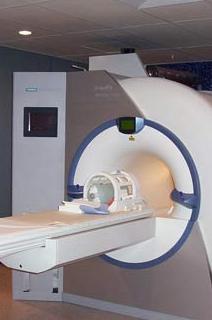

三伏以来，无锡气温最高已突破40℃，天气炎热，环境恶劣，我们企业女工始终坚守在工作一线，还要呵护着家庭。众所周知，夏季女性各类疾病高发，易病菌滋生，妇科炎症挥之不去，宫颈疾病、宫颈癌预防缺失。值此七夕节来临之际，锡西新城医院特别开展“关爱女职工，七夕送健康”大型健康公益普查活动。
-
健康大礼包一
电子阴道镜检查
意义：适用于女性宫颈（宫颈炎、宫颈糜烂、宫颈纳囊等）、阴道（阴道炎、阴道出血等）、外阴疾病（外阴炎、尖锐湿疣等）的普查及诊断。是一项自己可亲眼直视的高清、无创检查。
七夕价: 115元 - 健康大礼包二
- 1、为确保活动高效、有序、顺利进行，每天免费体检的女性职工限额30名，检查的时间一般安排在每天的下午14:00进行，晚上设有夜门诊至21:00；
- 2、女性职工需提前凭本人工作证至锡西新城医院导诊台登记预约，以便医院合理安排检查时间；
- 3、采集的TCT标本委托南京艾迪康医学检验中心检测，确保结果的权威性、准确性。
-
A
更直观、更准确地诊断妇科疾病，应用于女性宫颈、阴道及外阴疾病的普查和诊断，无任何创伤及副作用，可将病灶图像放大数十倍。
-
B
高度清晰的图像使医生只需在计算机显示器上就能观察到极其微小的病灶，提高判断糜烂、癌前病变、癌症等病变的准确率。
-
C
阴道镜检测的图像显示、冻结、采集等功能，可帮助患者更直观地认知宫颈病变的状况。

TCT液基薄层细胞检测
TCT液基薄层细胞检测是采用液基薄层细胞检测系统检测宫颈细胞并进行细胞学分类诊断，是目前国际上最先进的宫颈癌细胞学检查技术之一，对宫颈癌细胞的检出率为100%，同时还能发现部分癌前病变，微生物感染如霉菌、滴虫、病毒、衣原体等。
检查优势：
TCT细胞学检查取样方便，易于定期复查，与传统抹片相比，在制片上有重大的突破，使图像更加清晰，便于诊断，可以早期确诊癌及癌前病变，及时给予相应的治疗，有效降低宫颈癌的发病率和死亡率。